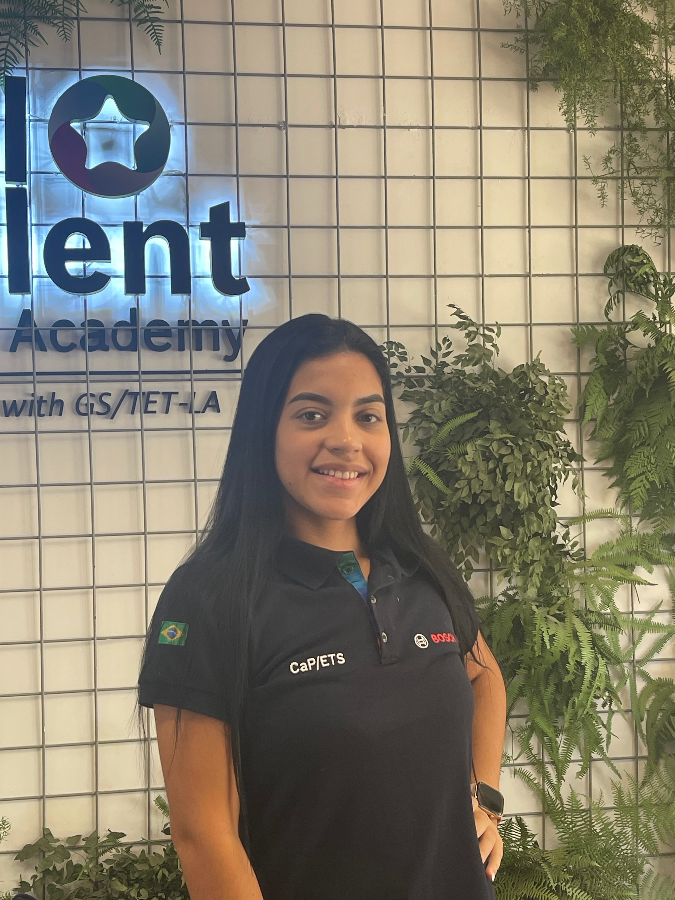

Curso: Técnico em Desenvolvimento de Sistemas
Semestre: 3
Interesse: IoT, sistemas embarcados, programação, tecnologia
Este projeto foi desenvolvido na disciplina de Internet das Coisas (IoT), com o objetivo de aplicar na prática os conceitos de sistemas embarcados, comunicação em rede e integração de dados. Durante o desenvolvimento, realizamos a montagem e configuração de sensores responsáveis pela coleta de informações ambientais, como temperatura e umidade, distribuídos em diferentes pontos da instituição. Além da parte física, também desenvolvemos uma aplicação web capaz de consumir os dados disponibilizados por meio de APIs, apresentando essas informações de forma organizada, visual e interativa. O sistema permite o acompanhamento em tempo real das medições, contribuindo para uma melhor análise das condições dos ambientes monitorados. O principal objetivo do projeto é transformar o ambiente do SENAI Roberto Mange em um espaço mais inteligente e conectado, utilizando tecnologias de IoT para promover monitoramento contínuo, tomada de decisões baseada em dados e maior integração entre dispositivos e usuários. Dessa forma, buscamos aproximar a teoria da prática, desenvolvendo uma solução inovadora com aplicação no mundo real.